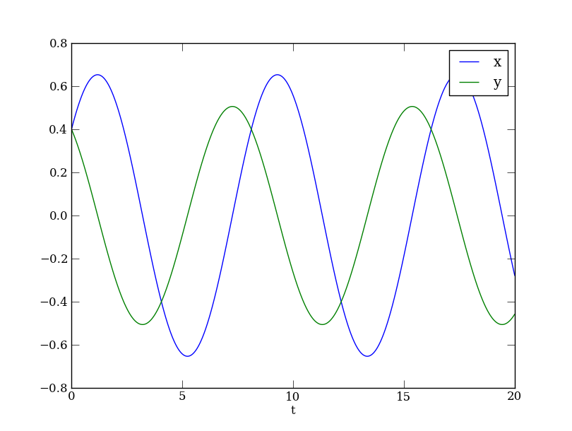

Site navigation:
See Tutorial_SHM.py. This is a beginner's tutorial, especially geared to those not used to programmatic environments such as Matlab. There is a lot of background discussion of Python syntax and the way to interpret how your script's commands are being used by the Python runtime environment when you issue them. The use of the symbol >>> will indicate the interactive Python prompt where commands are entered "live", with the following lines indicating the output from Python. In IPython and some other terminal/shell environments, this prompt may look different.
A linear differential equation model for simple harmonic motion for a mass m on a spring with spring constant k, having displacement x is
\( m \frac{d^2 x}{dt^2} = -k x, \quad \) (SHM)
However, most numerical solvers expect to be presented with a system of first order differential equations. Eq. (SHM) can be re-written by introducing .
\( \left\{ \begin{align*} \frac{dy}{dt} &= - \frac{k x}{m}, \\ \frac{dx}{dt} &= y \end{align*} \right. \qquad \) (SHMsys)
We will go through one way that we can specify this system using PyDSTool. We start a script with importing the mathematical functions and classes that we will use. Python itself is just a regular programming language, and doesn't know about the PyDSTool library until you ask it to import it. This first statement is an easy way to get everything imported at once. This will include many basic classes and functions from the math, numpy (mostly arrays) and matplotlib plotting library (pyplot). This is not considered best practice for more sophisticated programs, and another way will be demonstrated in later tutorials.
from PyDSTool import *
If you have already tried solving ODEs with Matlab, the fundamental way in which you interact with the system has some similarities to Python with PyDSTool, in that both are programming environments. You must understand how the interpreter reads the statements on each line of your script (program) or what you type in at the interactive prompt. Python is not “running” PyDSTool, as it is not an application such as XPP, Content, or Neuron. You should see yourself as building your own program using tools from PyDSTool, not giving “it” commands to do things for you. PyDSTool is not an omnipresent “entity” acting as a server or host, overseeing everything you enter. You are running Python itself, and you are executing statements that may create or use objects, functions, etc., from the PyDSTool library. Thus, every line of your script must be valid Python code, so learn Python effectively and you will make fewer mistakes when interacting with the PyDSTool libraries. In particular, you must understand the basic data types, and the difference between classes and objects, functions and methods, attributes and methods. If you don’t, look them up on the online Python documentation or read about them in a Python book (such as the free Dive Into Python): also see the local page PythonResources.
Your initial declarations and definitions in a script typically set up data used to create a model, using standard data types in Python. As in most programming languages, the name on the left hand side of the definition is your chosen identifier for the object created in memory on the right hand side. It is not a special name, but something you choose for your own convenience. The particular style of setting up a model may of course be varied according to taste, but the way we present it here helps to separate the different parts of the process while reminding you of some Python idiosyncracies along the way.
icdict = {'x': 1, 'y': 0.4}
The above statement declares a name, ‘icdict’, that you will use for the dictionary containing initial conditions for two variables, ‘x’ and ‘y’. These associations are entirely your own at this point: neither Python nor PyDSTool know that these are initial conditions or that you intend ‘x’ and ‘y’ to be variables. Equally, ‘icdict’ is not a reserved word or a command in PyDSTool, it is just an identifier that you might choose for convenience when setting up this information. Only later, when you provide a function from the PyDSTool library with a whole group of coherent information declaring the specifications for a model, will something know that you intended this ‘icdict’ dictionary to mean what you had in mind. This is why you must remember that the names ‘x’ and ‘y’ must be strings in the above statement. They may not be unquoted there because they will be treated as Python identifiers that do not exist, and you will get an error. Your statements must be valid Python code at all times!
There is no need to index a vector of variables and write equations in terms of these. As you will see, everything is specified in PyDSTool directly using names. Equally, this means there is no inherent order to the variables. It is not something you as a user are supposed to worry about! The numbers in the names ‘x’ and ‘y’ are only there to remind you of how you prefer to order them mentally, perhaps for historical reasons.
Python note: In terms of Python code, the line above defines a dictionary that contains two key-value mappings, one from the string ‘x’ to the integer 1, and the other from the string ‘y’ to the floating point value (float) 0.4. Dictionaries (which is the Python name for hash tables) are inherently unordered. Specifying two items to a dictionary in a certain order does not affect how the dictionary is stored, accessed, or displayed. ‘Keyed’, rather than indexed, data types, are crucial to Python and PyDSTool.
Python note: When you do index any indexable object (such as an array, list, or Pointset), you must remember that indices start at 0 in Python (as with the language C), not 1. As with Matlab, so-called fancy array indexing is possible, where you can specify a range of indices using the : operator. But, don’t forget that the last index of a range is not returned in Python! (Read more about why in Python’s own documentation.) A helpful trick is that the index -n for positive integer n will return the nth-to-last entry of the sequence. The ‘len’ function finds the length of any sequence or keyed data-type in Python.
pardict = {'k': 0.1, 'm': 0.5}
Python note: The ‘pardict’ identifier names the dictionary object containing the parameter values for ‘k’ and ‘m’. This, and the ‘icdict’ dictionary are names in the global workspace of your script. They may only be re-used independently inside function or class definitions, without conflicting with these global definitions.
The next command defines the vector field for your system, i.e. the right-hand sides (RHS) for your ordinary differential equations (ODEs).
x_rhs = 'y' y_rhs = '-k*x/m'
These definitions assign strings to two names in Python. The strings happen to use names that we have mentioned already, although the consistency and completeness of our specifications will not be checked until we try to build the model. The names that we assigned to were chosen only to remind you which string belongs to which variable, although neither Python nor PyDSTool appreciates this fact. You must put the equation in the form of a string! As Python identifiers, k, x, etc. would have no meaning as they are undefined in the programming language and neither the PyDSTool library nor this script have defined them!
vardict = {'x': x_rhs, 'y': y_rhs}
This dictionary will later tell PyDSTool that you have two dynamic state variables, whose dynamics are specified by the equations in the strings that the variable names map to.
The next group of commands collects the parts of the model specification together.
Python note: Any line beginning with one or more # characters is a comment in Python. A comment may also be added to the end of a line, after which no more Python code can follow until the next line.
DSargs = args() # create an empty object instance of the args class, call it DSargs DSargs.name = 'SHM' # name our model DSargs.ics = icdict # assign the icdict to the ics attribute DSargs.pars = pardict # assign the pardict to the pars attribute DSargs.tdata = [0, 20] # declare how long we expect to integrate for DSargs.varspecs = vardict # assign the vardict dictionary to the 'varspecs' attribute of DSargs
The ‘args’ class is imported from PyDSTool, and is essentially a structure that collects together data attributes in a conveniently addressable way to you. You are using it here to build all the information needed to create a valid dynamical system model, before making a call to create an object that computes trajectories of that system. It is intended as a more convenient and readable alternative to lengthy argument lists in initialization calls.
The attributes assigned to DSargs are names that will be expected by PyDSTool later, when we pass ‘DSargs’ to something that will build our model and let us simulate or analyze it. Some attributes are required, others are optional. They are detailed in the User Documentation. The initial conditions, parameters, time range data, among others discussed elsewhere, can be changed once the model is built.
Python note: The varspecs attribute of the DSargs belongs to its local scope, and not the one defined in the global scope of the script’s main body. There is no clash of names in this case.
We have given the minimum number of necessary specifications for an ODE model with parameters, in order to build a solver object that we can use to simulate trajectories. Internally, PyDSTool automatically converts your specifications and other information into executable code, either in native Python or in C. (The default is Python.)
DS = Generator.Vode_ODEsystem(DSargs)
You have passed the collected specification to an initialization call of a PyDSTool class for an ODE solver known as Vode. This class is itself a type (sub-class) of Generator, a PyDSTool class that covers many different entities that can create trajectories and curves based on some kind of rule.
If everything has been entered correctly, a Vode Generator object will be returned and given the name ‘DS’ in the global workspace of the script, for subsequent use. You could give your newly created Generator object any identifier you like (that doesn't clash with built-in names), but we chose 'DS' for Dynamical System. You will see other common choices are 'ode' and 'gen', depending on the type of Generator created.
Now that the model is built, any changes you wish to make to initial conditions, parameters, etc., must be made through interfacing with the DS object itself. Changing the dictionaries that you created at the outset will be invisible to the built model, unless you were to rebuild it. Rebuilding is an inefficient and usually unnecessary task. The only time it is required is if you need to change the equations themselves, the solver you wish to use, or other structural things about the model such as the number of parameters it uses.
Python note: You should read about “introspection” in Python to see how to find out more about any object you create, and how you can interact with it.
There are many ways to interact with the DS object. In addition to the written Tutorials and User Documentation online, there is a full Application Programming Interface (API) listing given in the html documentation of the PyDSTool installation directory. This lists all the attributes and methods of every class, as well as all the functions, constants, etc. defined in every module of the package. PyDSTool also provides two handy utility functions. One, ‘API’, that allows you to see what method calls are available. Another function that gives information about most major PyDSTool classes is ‘info’. Otherwise you may resort to the basic Python’s ‘dir’ function, which will list all manner of additional things you won’t be interested in. E.g. typing
>>> print API(DS)
at the interactive prompt, after the script has run, will show a long list of attributes and methods for this type of object:
Wrapper for VODE, from SciPy.
Uses Python functional specifications only.
AuxVars : asarray is an unused, dummy argument for compatibility with
Model.AuxVars
Jacobian : asarray is an unused, dummy argument for compatibility with
Model.Jacobian
JacobianP : asarray is an unused, dummy argument for compatibility with
Model.JacobianP
Rhs : asarray is an unused, dummy argument for compatibility with Model.Rhs
addEvtPars : Register parameter names as event specific parameters.
addMethods : no docstring
algparams : dict
auxfns : auxfn_container
checkArgs : no docstring
checkInitialConditions : no docstring
checklevel : int
cleanupMemory : Clean up memory usage from past runs of a solver that is interfaced through
a dynamic link library. This will prevent the 'continue' integration option from
being accessible and will delete other data about the last integration run.
compute : no docstring
contains : Interval containment test
defined : bool
diagnostics : Diagnostics
dimension : int
eventstruct : EventStruct
funcspec : RHSfuncSpec
get : For API compatibility with ModelInterface: get will make a copy of
the key and pass it through the inverse FuncSpec-compatible name map.
getEventTimes : Produce dictionary of lists of all flagged events' independent
variable values, for each event (whether terminal or not).
Times will be globalized if optional asGlobalTime argument is True
(default behavior). If a single event name is passed, only the pointset
is returned (not a dictionary).
evnames may be a singleton string or list of strings, or left blank to
return data for all events.
The events are guaranteed to be ordered by the value of the
independent variable.
getEvents : Produce dictionary of pointsets of all flagged events' independent
and dependent variable values, for each event (whether terminal or not).
Times will be globalized if optional asGlobalTime argument is True
(default behavior). If a single event name is passed, only the pointset
is returned (not a dictionary).
evnames may be a singleton string or list of strings, or left blank to
return data for all events.
The events are not guaranteed to be ordered by the value of the
independent variable.
globalt0 : int
haveJacobian : Report whether ODE system has an explicit user-specified Jacobian
associated with it.
haveJacobian_pars : Report whether ODE system has an explicit user-specified Jacobian
with respect to pars associated with it.
haveMass : Report whether ODE system has an explicit user-specified mass matrix
associated with it.
indepvariable : Variable
indepvartype : type
info : no docstring
initialconditions : dict
inputs : dict
name : str
numpars : int
parameterDomains : dict
pars : dict
pdomain : dict
prepDirection : Common pre-integration tasks go here
query : Return info about Generator set-up.
Valid query key: 'pars', 'parameters', 'pardomains', 'events',
'ics', 'initialconditions', 'vars', 'variables',
'auxvars', 'auxvariables', 'vardomains'
resetEventTimes : no docstring
resetEvents : Reset any high level (Python) events in Generator
set : Set ODE system parameters
setEventICs : Set initialconditions attribute of all generator's events, in
case event uses auxiliary functions that access this information.
showAuxFnSpec : no docstring
showAuxSpec : no docstring
showEventSpec : no docstring
showSpec : no docstring
tdata : list
tdomain : list
trajevents : NoneType
validateICs : no docstring
validateSpec : no docstring
variables : dict
xdomain : dict
xtype : dict
You should not change attributes of DS directly by hand. Often, other attributes are inter-related and must be kept consistent. Also, certain checks must be made on the values given to the attributes. Only by calling the ‘set’ method of DS will you ensure that all of this is taken care of for you.
>>> DS.set(pars={'k': 0.3},
ics={'x': 0.4})
demonstrates two points: One, you can set individual parameters without affecting the values of others, if you so choose. Second, you can change multiple kinds of things about the model by comma-separating the arguments to set. You must use the same names for arguments (e.g., ‘pars’) as you did in the attributes of DSargs. Also, note that we are not changing the original dictionaries at the top of the script, which we used to define the parameter and initial condition values before creating the Generator. Those no longer play a role in working with the simulator.
Python note: Notice that we could split the line across the comma-separated list of arguments to the call to ‘set’, without needing a special line continuation code. Python is smart like this. We didn’t need to indent the next line by any particular amount, but it helps to keep things tidy.
The independent variable is usually assumed to be ‘t’ in your equations, and is usually associated with ‘time’. This does mean that you may not use ‘t’ for any other purpose, such as for a variable or parameter name. Capital ‘T’, or variations such as ‘t_var’, etc., are fine. If you wish it to be designated otherwise you can. However, some PyDSTool modules will presume ‘t’ is the independent variable regardless. This may be addressed in a future release.
We are now equipped to solve the ODE to obtain a trajectory from the initial condition known to the Generator. We can then plot the results. Unlike a window-based user interface, the solvers are not designed to plot to a window as they solve. In fact, that would make them much less efficient. Instead, the solver goes off and works by itself (usually silently), then returns its result. Only then we can inspect the results, and plot them if we want to. The following commands first compute a Trajectory object, and then extract the individual Points for plotting purposes.
traj = DS.compute('demo')
pts = traj.sample()
max_pts controls the amount of pre-assigned memory when integration begins. If you create loops with many separate integrations, the amount of memory for that many points multiplied by the number of variables and auxiliary variables recorded in a trajectory is allocated and deallocated each time. This can lead to a large amount of additional time spent in the loop. Remember, hybrid systems involve separate integrations, and the max_pts option in a Generator’s alg_params is only relevant to that Generator. Therefore, you might consider an estimate of the largest reasonable number of points for each call to that Generator’s compute method as your choice of each one’s max_pts.
plt.plot(pts['t'], pts['x'], label='x')
plt.plot(pts['t'], pts['y'], label='y')
plt.legend()
plt.xlabel('t')

Let us see how to write some simple Python functions that compute quantities derived from the points created. In this case, we define the kinetic energy (KE) and potential energy (PE) of the system.
Python note: Notice that the definitions refer to DS, which is implicitly a global variable referring to our Generator as it has not been declared locally in the function. This is a safe practice in simple scripts like this one.
The functions access the current values of the two parameters (they may be different to those in the original pardict, which remains with the values we initially gave it). We also use the name 'pts' locally, i.e. it is not bound to be the same object as the 'pts' we just created when sampling the trajectory. The dynamic typing of Python means that we are allowed to pass any meaningful object type to this function. For instance, this syntax allows us to pass either a Point or Pointset to this function. To measure the total mechanical energy over the simulation, we can compute this from our integrated points:
def KE(pts):
return 0.5*DS.pars['m']*pts['y']**2
def PE(pts):
return 0.5*DS.pars['k']*pts['x']**2
total_energy = KE(pts) + PE(pts)
Interactively, we can enter the name of an object, press <return> and see what its contents are:
>>> total_energy
array([ 0.064, 0.064, 0.064, ..., 0.064, 0.064, 0.064])
We find that the result is a numpy array, and we verify that the total energy is constant along this trajectory (the system conserves energy). We could also find the KE at an individual point. Let us find the KE at time t=5.4, for instance. But what if the integrator didn't return a point exactly at this time value? It depends on the time steps that the integrator chose. Under many circumstances, we would rather get on with doing math than figuring out whether the integrator did return that point or how to force it to return precisely that time point in its output. This is where the beauty of the Trajectory object comes in. It is not just an inconvenience getting in the way between the Generator's output and your pointset! We can use the 'traj' object as if it was the parametric function we would like it to be, and do the following:
>>> KE(traj(5.4))
0.0010671506776360137
This works because the trajectory object interpolates between independent variables automatically. By default it uses linear interpolation but it can be set to do quadratic interpolation instead. This effectively means that the 'traj' object acts like a mathematical parameterized curve, as a function of the independent variable. The result of the call to 'traj' is a Point object. The function KE accepts a Point simply because it returns the correct single scalar value for this case.
For the record, we can verify that the time point t=5.4 was not in our pointset's independent variable array with
>>> 5.4 in pts['t']
False
If we cared for some reason, we could nevertheless find the two closest time points to t=5.4 in terms of their indices in the independent variable array, thus:
>>> pts.find(5.4)
(539, 540)
If we just wanted to the lower one we could have added an optional second argument '0' to this call, and it would have just returned 539. Equally, '1' would return the 540. The flexibility of Pointset indexing allows us to specify integer indices instead of the string variable names that we have used so far. Let's use Python's fancy indexing syntax (using the colon operator) to select a subset of the points:
>>> pts[540:]
Pointset (parameterized)
Independent variable:
t: [ 5.40270135 5.41270635, ..., 19.989995 20. ]
Coordinates:
x: [-0.64755061 -0.64686699, ..., -0.27542897 -0.2800108 ]
y: [ 0.06638463 0.07026984, ..., -0.45878462 -0.45711746]
Labels by index: Empty
This is a new Pointset containing all the points from just after t=5.4 until the last, which is at the stop time t=20.